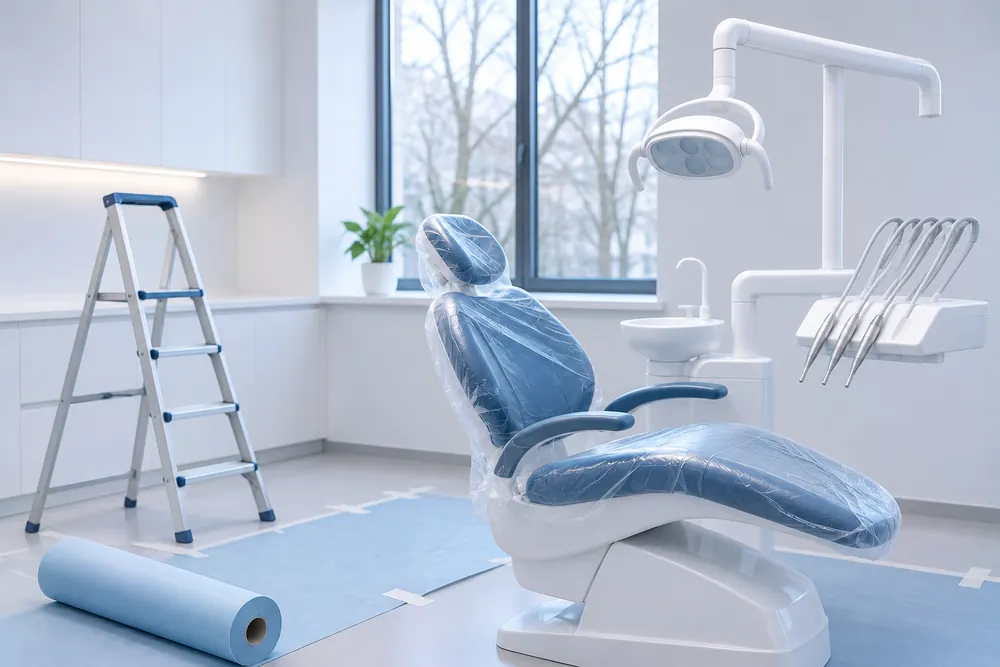

Как открыть стоматологию с нуля: пошаговый план
Эта статья написана с точки зрения маркетинга: какие решения первых недель потом помогают или мешают привлекать пациентов. Ниже пошаговая инструкция без готового бизнес-плана: что нужно, чтобы открыть свою стоматологию, из чего складывается бюджет и когда пора думать о пациентах.

Что нужно, чтобы открыть свою стоматологию
- Юридическое лицо или ИП. Форма зависит от того, есть ли у собственника медицинское образование.
- Помещение. В собственности или аренде, подходящее по санитарным требованиям.
- Оборудование. С регистрационными удостоверениями и договором на обслуживание.
- Сотрудники. Врачи и медсёстры с действующими документами об образовании и аккредитации.
- Санитарно-эпидемиологическое заключение. На помещение и на работу с рентгеном, если он есть.
- Лицензия на медицинскую деятельность. С перечнем работ и услуг, которые клиника будет оказывать.
Как открыть стоматологию с нуля: пошаговая инструкция
- Формат и услуги. Кабинет на одно кресло, клиника на два или три, с хирургией и имплантацией или без. От этого зависят площадь, оборудование и перечень услуг в лицензии.
- Расчёт. Стартовые расходы, расходы на первые месяцы и план по загрузке. Бизнес-план стоматологии нужен в первую очередь самому владельцу, а не банку.
- Помещение. Проверьте его по санитарным требованиям до подписания аренды: площадь кабинетов, вода, вентиляция, отдельное помещение под стерилизацию и рентген.
- Регистрация. ООО или ИП, система налогообложения, расчётный счёт.
- Ремонт и оборудование. Проект делают под требования к медицинским помещениям, иначе переделывать придётся перед проверкой.
- Сотрудники. Трудовые договоры с врачами и медсёстрами нужны до подачи на лицензию.
- Заключение и лицензия. Санитарно-эпидемиологическое заключение, затем заявление на лицензию.
- Подготовка к открытию. Прайс, договоры с пациентами, информированные согласия, сайт, карточки на картах, запись.
Открыть свою стоматологию с нуля можно самостоятельно, если есть время вникать в требования. Открыть стоматологию под ключ предлагают компании, которые берут на себя проект, ремонт, оборудование и лицензию. Это экономит время, но не снимает с владельца главного: формат, услуги, врачи и цена остаются его решениями.
Лицензия и требования к помещению
Лицензирование медицинской деятельности описано в положении, которое утверждено постановлением Правительства от 1 июня 2021 года № 852. В лицензии перечисляют работы и услуги: например, стоматология терапевтическая, хирургическая, ортопедическая, ортодонтия, рентгенология. Рекламировать и оказывать можно только то, что в ней указано.
Санитарные требования к медицинским организациям собраны в правилах СП 2.1.3678-20. Для стоматологии в них, среди прочего, заданы площади: не менее 14 кв. м на кабинет с одной стоматологической установкой и дополнительная площадь на каждую следующую. Отдельно регулируются стерилизация, вентиляция, отделка и рентген. Действующие цифры проверьте по тексту правил: они меняются.
Самая дорогая ошибка на этом шаге: снять красивое помещение на первом этаже, в котором нельзя разместить рентген или не хватает площади на второй кабинет.
Сколько стоит открыть стоматологию: из чего складывается бюджет
На вопрос «сколько нужно денег, чтобы открыть стоматологию» честный ответ один: зависит от формата. Вместо одной цифры полезнее список статей, по которым её считают.
| Статья | От чего зависит |
|---|---|
| Помещение | Город, район, площадь, аренда или покупка, обеспечительный платёж |
| Ремонт | Состояние помещения, требования к отделке, вентиляция, защита рентген-кабинета |
| Стоматологические установки | Число кресел и класс оборудования: это главная разница между сметами |
| Рентген и диагностика | Визиограф, ортопантомограф или компьютерный томограф |
| Стерилизация | Автоклав, мойка, упаковка, хранение |
| Мебель и техника | Ресепшен, зона ожидания, компьютеры, программа для записи |
| Документы | Заключения, проект радиационной защиты, подготовка к лицензии |
| Материалы и инструменты | Набор услуг на старте |
| Запас на первые месяцы | Аренда и зарплаты, пока расписание не заполнено |
| Маркетинг к открытию | Сайт, карточки, вывеска, первая реклама |
Для ориентира: открытые сметы поставщиков оборудования осенью 2026 года называют для кабинета на одно кресло с недорогим оборудованием суммы от 1,2 млн ₽ до первого пациента, для клиники на два или три кресла среднего класса от 5 млн ₽ и выше. Сколько стоит открыть стоматологию в Москве, сильнее всего зависит от аренды и зарплат: они выше, чем в регионах. Это чужие оценки, и к вашей клинике их нужно пересчитать.
Чаще всего в расчёте забывают запас на первые месяцы. Клиника открыта, расходы идут в полном объёме, а пациентов пока мало.
Когда начинать маркетинг
За два месяца до открытия, а не после него. К первому дню работы у клиники должны быть:
- Название и вывеска. Название проверено на занятость в городе и в поиске.
- Сайт. Страницы услуг с ценами, врачи, лицензия, запись. Обязательные сведения описаны в статье о требованиях к сайту клиники.
- Карточки. Яндекс Карты, 2ГИС, ПроДокторов. Новой клинике карты дают первых пациентов из района раньше всего.
- Порядок ответа на обращения. Кто берёт трубку, что говорит, как записывает.
- Реклама одной или двух услуг. Не всей клиники сразу. Подробнее в статье как привлечь пациентов в стоматологию.
Рекламу медицинских услуг можно запускать только после получения лицензии: до этого объявления не пройдут проверку, а сама реклама будет нарушением.
Статья описывает общие требования и не заменяет консультацию юриста. Документы меняются: перед запуском сверяйтесь с действующей редакцией.
Новой клинике готовим сайт, карточки на Яндекс Картах, в 2ГИС и на ПроДокторов к дню открытия: Комплексный маркетинг для стоматологии.